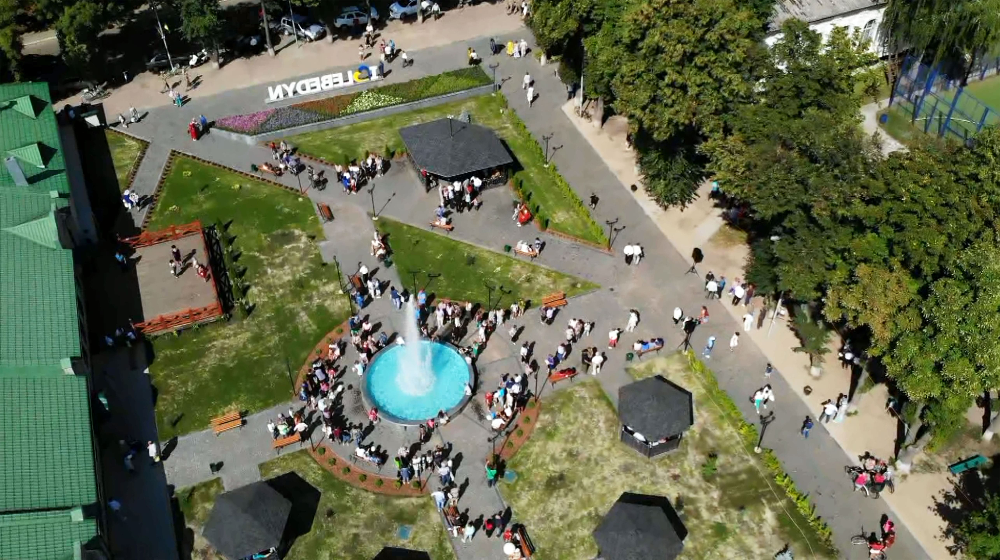
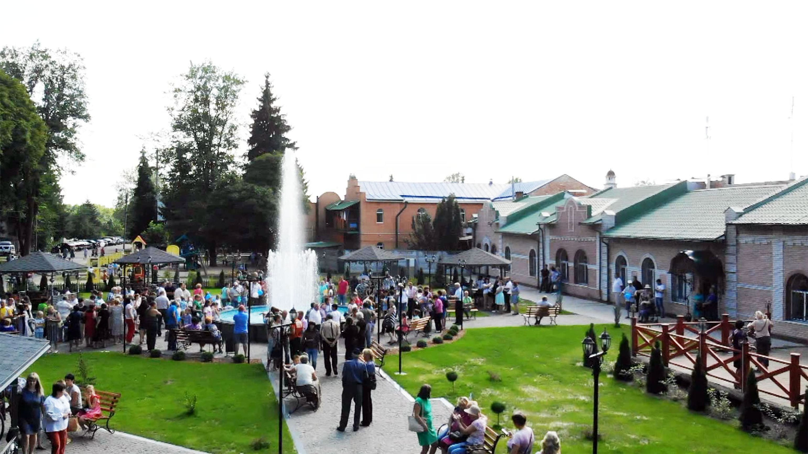
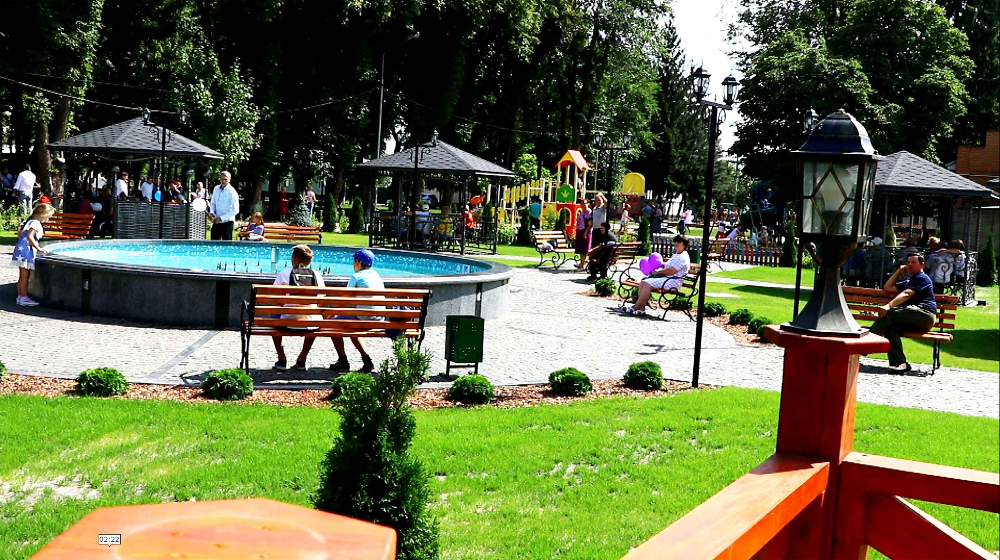
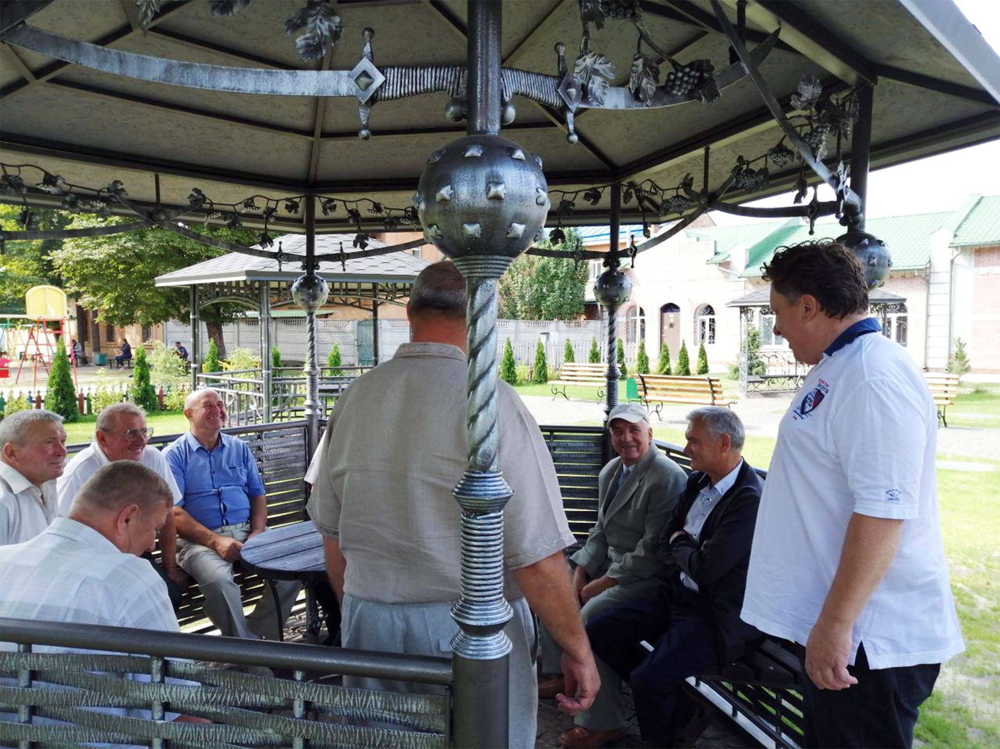
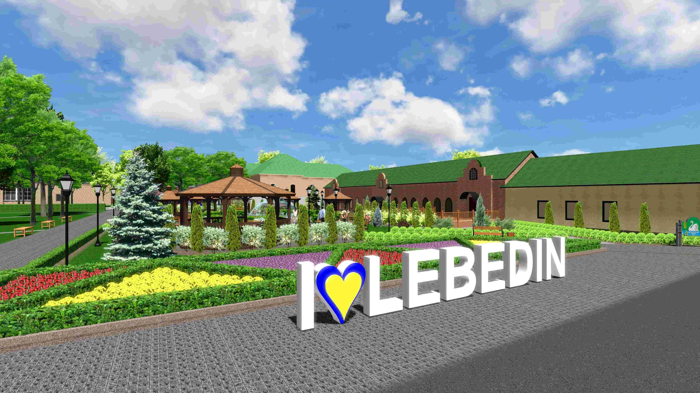
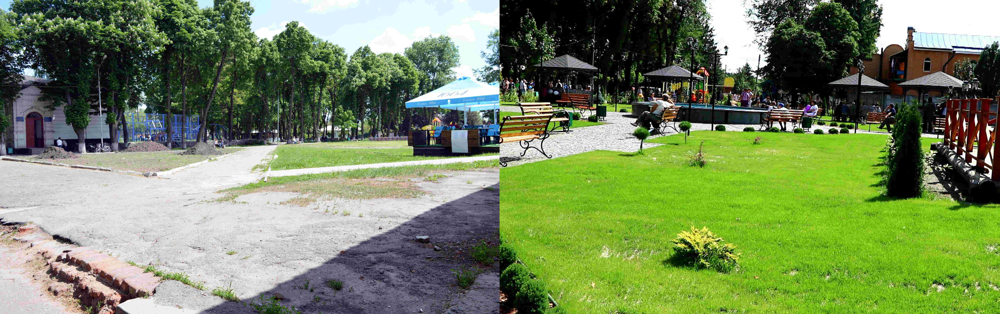

Central Square in Lebedyn:

After reconstruction, the square is considered
the main decoration of the city, with various
elements of street design, where every visitor
will feel comfortable and will be able to find
their own cozy corner.

There is a large fountain in the center of the
park.

The square is completely and qualitatively
rebuilt, landscaped, paths are paved.

Five unique wrought-iron gazebos await residents
and guests of the city.

On August 19, 2019, the grand opening of the
renovated park took place, with the
participation of the mayor of Lebedyn -
Oleksandr Baklykov.

Reconstruction works were carried out during the
year.

Park reconstruction plan approved by the Lebedyn
City Council.

Central Square of the city of Lebedyn, before
and after the reconstruction carried out by the
Ivan Lozowy Fund.